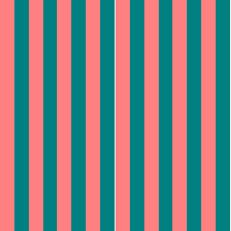
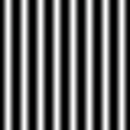
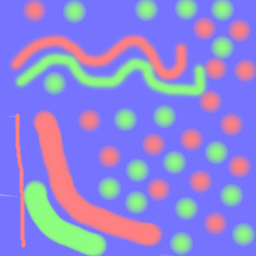
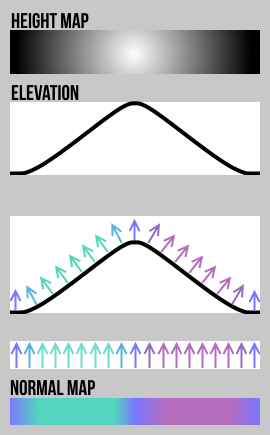

Page 21: Bump, Normal, and Displacement Maps
Here, we consider different ways to add detail to the shape of the object. As with colors, if we want to add small details, describing them in an image can be convenient, and also better for implementation (since we don’t have tons of little triangles).
Small changes to a surface can do two things: they change the shape (where things are), but they also change how light interacts with the object. If we don’t look too closely, we can do one without the other: we can change how light interacts with the object by faking it.
There are two standard categories of methods for adding surface details: displacement maps (which actually change the shape) and normal maps (which only change the normal vectors, faking lighting). Bump maps are a type of normal map.
Fake Normals
Here is the demo from earlier in the workbook, with a few more options. In this scene we are creating a wavy object (it’s now on the left). The object is white; however, there is a strong red light coming from one side and a strong blue light coming from the other, so the object looks like it is red and blue striped.
Making the wavy object required us to use triangles to model the shape of all of the surface details. If the pattern was complicated and had lots of detail, this could become complicated and require lots of tiny triangles.
If we flatten the object’s shape, but keep the normals from the wavy surface, we get the same lighting effects, but not the shape effects. If we look at it from the right direction, it is very similar, although if we look at it from the wrong direction, the fake is obvious.
{kind=link}
{kind=link}
Of course, this requires all the work of making the triangles, but it hopefully explains the concepts: we want to take the flat surface and change its normal vectors to change how it reacts with light. We’ll get the changes to the normal vectors by reading them from a map that is just like a color map.
In the demo, I show a flat plane. Notice that it is gray since the red and blue lights don’t hit it (they come from the sides).
To the right of that is something labeled “Normal Map” that should look very similar to the “using normals” case. It’s not exactly the same (I didn’t match the stripe width, and I have the angles off slightly so that it may appear a little brighter). In this image, I’ve created a normal map which is a picture whose colors are used to change the normals during drawing. The texturing process does a texture lookup for every pixel and gets the color, but uses the color to change the normal direction. The texture that I applied as the normal map is:

{kind=link}
The nice part of this is we can paint arbitrary details in the map, but still only use the large triangles. We don’t get the actual shape change, but often changing the light is good enough.
Having to figure out the colors corresponding to directions can be tricky. An easier thing to do is create a grayscale height map that describes the desired geometry to fake. This is known as a bump map, where the texture values correspond to the height of the surface from the original. The normal directions are computed by estimating this surface and changing the original object normals accordingly.

{kind=link}
Because of some details of how normal maps work, this demo didn’t reproduce the effects well (it is hard to make sharp edges with normal maps).
Normal Maps
Normal maps use textures to change the apparent shape of the object by using the texture to modulate the normals on the surface so it interacts with light differently than it otherwise would.
The basic idea is that the R,G,B channels of the texture map will give us the X,Y,Z direction of the normal vector. However, there is a catch: what X,Y,Z do we use?
The most common way to do normal maps is to define a local coordinate system so that Z is the direction of the “real” normal (so 0,0,1 would be keeping the original normals). This is convenient because it means that blue colors in the normal map mean “keep the normals the same”, and everything else represents a change from the object’s true shape. The other two directions are the directions of U and V along the surface. This is called tangent space normal maps.
THREE supports tangent space normal maps. It also supports “object space normal maps” that just use the XYZ of the object’s local coordinate system.
There is one other issue: we want to have normals with negative directions, but we don’t have negative colors. Our normal vectors are unit vectors, with each component ranging from -1 to 1. To pack these into the 0-255 values in an RGB image, we put zero at the center of the range (128, or x80). The “no change” normal vector (pointing in the Z direction), would be the vector (0,0,1), which maps to (128,128,255) or (0x8080FF). We see a lot of this pale blue color in normal maps.
Because we want to store unit vectors in the normal map, and change in one component requires a coordinated change in the other component. For example, the vector in the direction (1,1,1) would need to be divided by its length (to make it a normal vector), and be stored as (201,201,201) or 0xC9C9C9. The need to have the changes in values be coordinated makes normal vectors difficult to create correctly by hand. Fortunately, most programs that use normal maps (including the standard shaders in three.js) normalize the vectors before using them.
There is an excellent tutorial on normal maps in the Unity documentation. They like to call normal maps a kind of bump map (so height maps, which are a kind of displacement map discussed below, are also bump maps for them).
Here is a simple example of a normal map:
{kind=link}

Making a good normal map is hard, since you need to think about how the normals would be changed in order to achieve the effect and convert these to appropriate vectors. This motivates what comes next.
Bump Maps and Normal Maps
The term bump map is often used interchangeably with normal map, but it really refers to a special kind of normal map that was actually invented first. Historically, bump maps refer to this specific kind of normal map, although some people use bump map as a general term (see the Unity documentation as an example).
Making normal maps is a bit of a pain since you have to create 3-vectors (for the normal direction). It’s hard to understand what the colors mean.
Bump maps simplify this. They use only 1 color channel (so the textures have 1 number). The number is interpreted as a height. You could think of the bump map as a height map that alters the surface by pushing it upwards (in the normal direction) at each point. However, it doesn’t really change the shape - it just adjusts the normal vectors as if it had this altered shape. The normals (as we would have from a normal map) are computed from the height differences.
Here is a visual explanation of the difference that I like (taken from normalmap.net):
 A visual explanation of normal vs. bump maps.
From normalmap.net
{kind=link}
Bump maps are very easy to make, since you just paint some bumpiness.
Here are the maps used in this demo (use the “Bumps” button to switch maps):
{kind=link}
{kind=link}
Normal Maps and Displacement Maps
Remember, normal maps (and bump maps) don’t change the actual shape, they only change the apparent shape by changing the normals, which affect how light interacts with the surface (including reflections).
This has some limitations, including:
- If you look at things from the side, you’ll see the object is not bumpy.
- There are no self-occlusions.
- Things like shadows that depend on shape don’t see the bumps (since they aren’t really there).
There is yet another kind of mapping called displacement mapping that is like normal mapping, except that rather than changing the normal, it actually changes the positions/shape (which also affects the normals). Displacement mapping is different from all the other mappings we talk about because it causes things to move: if you compute it for a pixel, that pixel might move to a different place (in which case, it will be a different pixel). With displacement mapping, you need to worry about making holes in things.
From an implementation perspective, displacement mapping is implemented very differently. There is displacement mapping in three.js, but it works by moving the vertices of triangles, rather than changing pixel colors. Therefore, you can’t use three.js displacement mapping if you have big triangles. Displacement maps require dividing the object up into small triangles.
The Normal Map and Bump Map Exercise
Your turn. In the scene below, add two objects. On one of them, put a bump map. On the other one, put a normal map. Try to think of some kind of bumpiness that you’d want to add, and figure out how to make it. It is OK to find textures for this on the web (but be sure to give proper attribution where the textures come from!).
In order to see the effects of the bump and normal maps, you will probably either want your objects or the lights to move, which will make it more obvious that there is bumpiness.
In this exercise, have the object material be a solid color, so all of the variation comes from the lighting (which is affected by the bump/normal maps). You can experiment with changing the lights to create more drastic effects (this is built in to the code framework, but you can try it yourself). You might also want to experiment with other material properties (such as roughness and metalness) to make the lighting effects more dramatic.
Put the code in 05-21-01.js , and don’t forget to add any texture files. You should be able to explain how we can see the bump/normal map effect.
For a challenge, try to make the same effect with both a normal map and a bump map - this will help you understand why we prefer one over the other for different situations.
view - look at the box and experiment with it
examine - look at the code for the box
edit - change the box's content
rubric - several steps are suggested in the rubric page - form elements on page in rubric
05-21-01.html 05-21-01.js
| Kind
Kind of rubric items: standard - expected from all students advanced - used to get a better grade creative - an opportunity to do something creative optional - not required, but encouraged |
Description | |
| standard | appropriate scene (objects and lighting) | |
| standard | bump mapped object (with map) | |
| standard | normal mapped object (with map) | |
| standard | explanation of how we can see the effects | |
| advanced | combine with color map, with explanation |
Of course, if you get an image from the web, be sure to give proper attribution.
Advanced: create a third object that uses a color map and a bump or normal map together to achieve some effect. The two must be coordinated in some way (so that they work together to create some effect). Explain what you did in the text box (why do the two work together, and how can we see it).
Summary
Normal, Bump and Displacement maps give us different ways to add apparent shape details to surfaces.
Next: Page 22 - Environment Maps